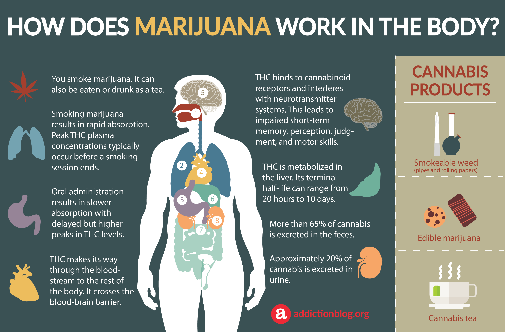
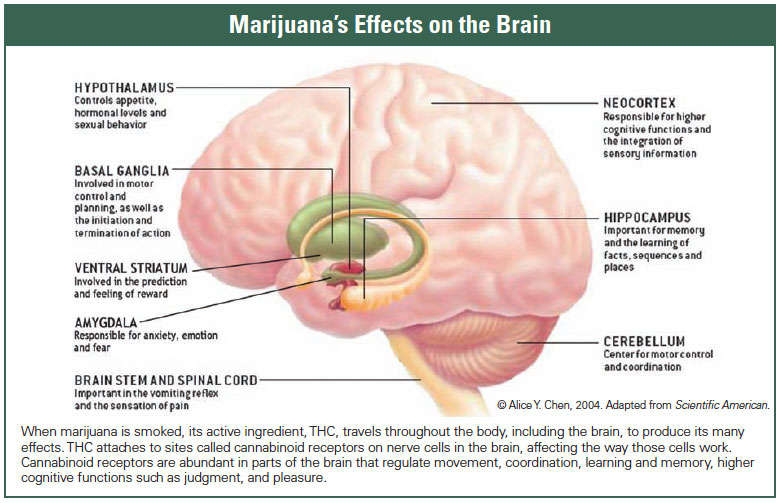

Cannabis
everything you need to know
About
Cannabis, also known as Marijuana, is one of the most popular drugs in the world. It is a depressant meaning it slows the CNS (Central Nervous System), slowing the messages sent to and from the brain. One who consumes it in some way shape or form is said to feel anything from happy to anxious. The nicknames for Cannabis and Marijuana will vary from person to person but can be one among weed, pot, grass, dope, reefer, ganja, hash, herb and chronic.
Effects on the body
Cannabis affects the systems in your body a lot, it affects the respiratory system by irritating bronchial passages and lungs which can cause lung infections and worse if the user has preexisting respiratory illnesses.
Cannabis can affect the circulatory system by increasing heart rate by 20-50 beats for up to 3 hours. It may increase the chance of heart attack.
It can affect the central nervous system by slowing it down, easing pain and releasing dopamine.

Effects on the mind
Consuming cannabis obviously has effects on your body but what about effects on your mind? From short to long term these effects are very serious. Short-term effects of Cannabis can include memory problems, Paranoia, Anxiety, Psychosis, panic, Hallucinations, Loss of personal Identity and Slower reaction time.
Meanwhile long-term effects of Cannabis consumption include decline in IQ points (for adolescents), Addiction and Lower life satisfaction/Depression
Social problems: Relationship problems and unemployment.

Facts, Stats and Myths
As previously stated Cannabis isone of the most used drugs and with such a reputation there’s sure to be myths scattered throughout the truths. “Portugal has legalised marijuana” this myth comes from the fact that Portugal has “decriminalised” Marijuana however “decriminalised” is not the same as “legalised” meaning you will still be fined for purchasing, selling or possessing drugs. “Cannabis causes cancer” While there are a lot of things that can cause cancer Cannabis is not among them while there are carcinogens within them even heavy usage still is nigh impossible to have enough to have any major effects on getting lung cancer. Did you know that of under 14 year olds 36% had used Cannabis in their lifetime back in 2019, it is also relatively easy to obtain in Australia and did you also know that cannabis can be used medicinally to relieve pain.
Why teens use Cannabis
Most cannabis usage is not for medicinal purposes and is instead recreational, but how does an addiction for cannabis especially with Teenagers who have the most to lose. One of the most common reasons is “It helps me feel better”, between work/school, sleep and managing your social time. Life can be stressful, but drug abuse is not the answer.
“Everyone else is doing it” peer pressure isn’t a good thing, weather it is self imposed or not it will absolutely lead to a bad ending and if you think that the only way to fit in with your friends is to consume drugs, then I suggest surrounding yourself with people who don’t view recreational drug usage as a good thing.
“I want to know what it’s like” as a child there are so many rules things you can’t do that when those walls are lifted you immediately try to explore the vast world you now live in, so trying new things is inevitable but you still have to think within reason, to do your research and know your boundaries. For those who do have a problem they should go see the support structures that can help them such as Kids helpline.